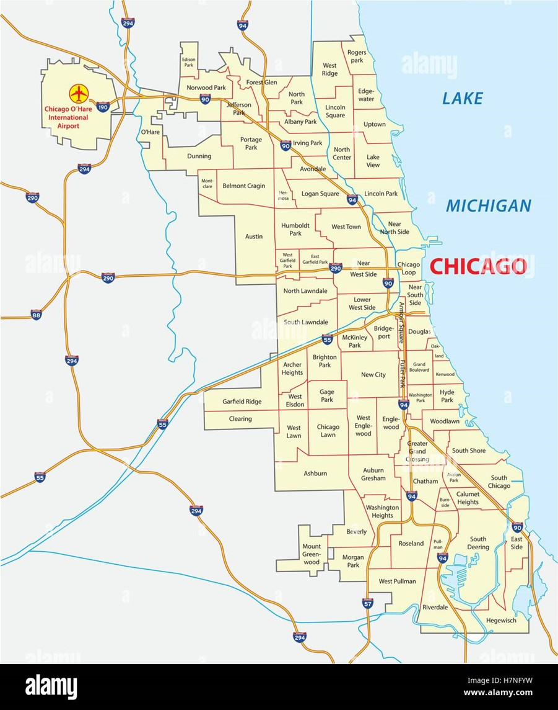

Marco Geografico
En 1933 se creó en Chicago la primera escuela de comunicación, impulsada por el interés del Estado en investigar los efectos de las imágenes lanzadas por los medios de comunicación en diferentes grupos sociales. Esta iniciativa se basó en el pragmatismo de Dewey y Mead, enfocado en la utilidad práctica, los efectos y las consecuencias. Fue en este contexto donde surgió el concepto de Ciencias de la Comunicación Social, que se centra en la medición cuantitativa de los efectos de la comunicación vertical, es decir, aquellos que influyen en los receptores sin tener en cuenta su participación activa en el proceso. 